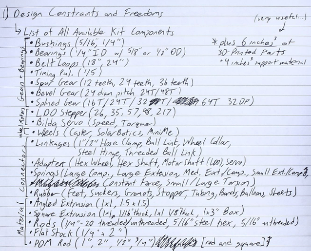
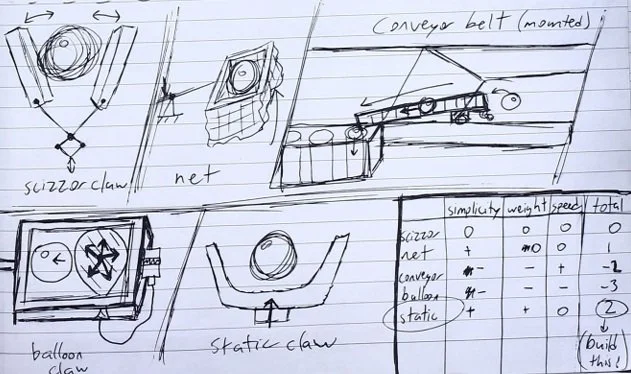
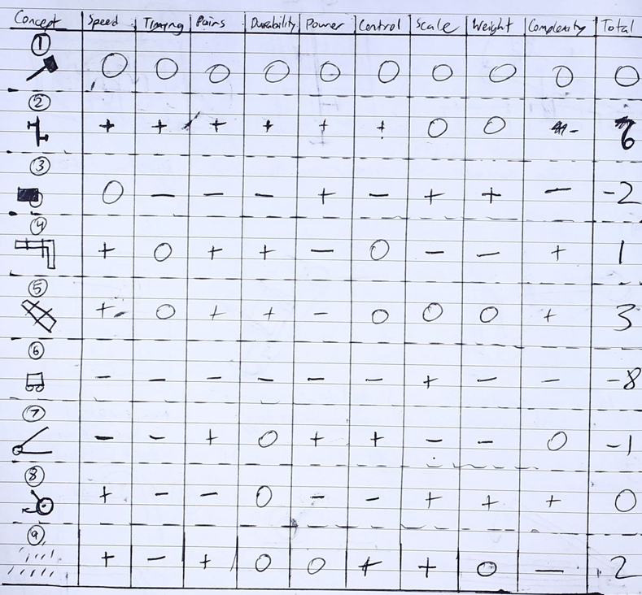
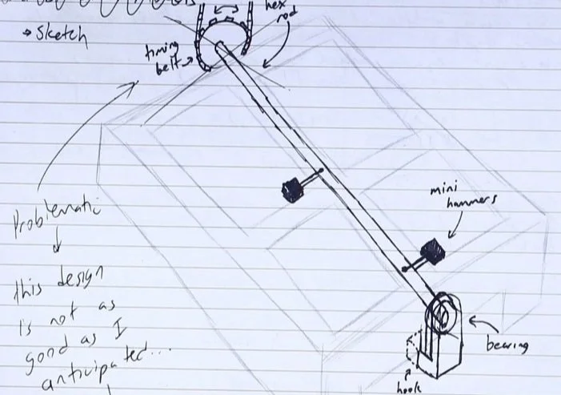
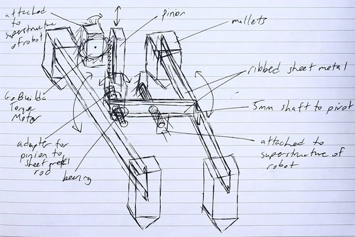

2.007 Design and Manufacturing I
SCORPION - Sophomore Capstone
Scorpion: Overview

Starting out simple
Before designing a robot to approach the main task, I built a testing platform to familiarize myself with the scale of the board, the machine shop, and the available components.
Kit Components
Ideation and Refinement
Five concepts to transport plastic balls, followed by a decision matrix to evaluate the options and select the best.
Translated cardboard prototype to a manufacturable design from bolted sheet metal and aluminum L-brackets.


Vat of Acid Challenge
After choosing the Static Claw, I developed five unique designs and another decision matrix to choose a final idea.
Simple CAD to reference while machining brackets and bending sheet metal.

MiniMe effortlessly transporting balls out of the vat of acid — success!
Problem Statement
Design a robot to interact with the Gooble Box, a 2x2 button panel on a 25° incline. The robot must…
- Start from a colored zone above or below the ramp.
- Press buttons in an alternating sequence (right-left-right-left).
- Apply 20N to the top buttons and 10N to the bottom buttons.
- Delay for at least 500ms between presses.
- Stay within a 12x12x16” bounding box.
- Maximize points in 90 seconds.
Concept Generation
How many ways can a robot press the buttons?
(2) Inner-Rod Hammers
(5) “Drive-Over-It” Strategy
Most Critical Module (MCM)
To push the buttons, I developed a camshaft design that converts the rotational motion of a motor into the linear motion of shafts. The rotationally offset cams ensure the buttons are pressed at a constant frequency.


MCM Design Overview
I designed the MCM to be manufactured from simple sheet metal bends, rods, springs, e-clips, washers, and bushings, paying attention to stiffness and reducing misalignment.
Chassis and Drivetrain
Key Idea: By making a narrow wheelbase, the robot can drive in the space between the buttons. Furthermore, to avoid bottoming out when climbing onto the panel, continuous contact with the ground is maintained with tank treads.

.gif)
Designing Effective Treads
This design uses a 24-inch timing belt as the tank treads, alongside rods, LDO motors, bushings, e-clips, washers, and custom acrylic timing gears. Special consideration was given to the minimum number of teeth in contact with the gear to ensure adequate belt tooth shear strength.
Testing

around the world, around the world, around the world...
Acknowledgements
Professor Seering
I want to give a huge shout-out to my advisor, Professor Warren Seering. Your support was invaluable throughout the semester, and you have made a tremendous difference in my life and my confidence as a mechanical engineer.
Pappalardo Shop Staff
Thank you to all of the wonderful machine shop staff who worked all hours of the day, especially towards competition season. I want to personally thank Scott for his amazing tips and horrible puns that carried me throughout the semester.